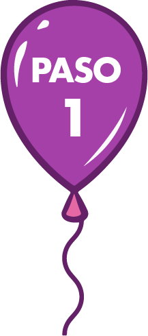
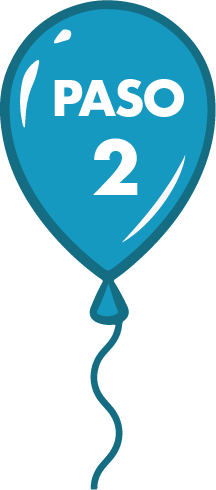
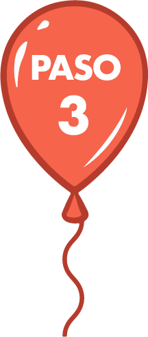

¡Construyendo puentes!
Diseñar la hoja de ruta para la construcción de estrategias de intervención que contribuyan a promover comportamientos seguros y consolidar una cultura vial.
-

Objetivo - Tiempo - Recursos
-

Paso a paso
-

Herramientas
-


-
Objetivo de la fase:
Diseñar la hoja de ruta para la construcción de estrategias de intervención que contribuyan a promover comportamientos seguros y consolidar una cultura vial.
-
Tiempo estimado de ejecución:
60 días
-
Recursos requeridos:
-
Humanos: necesitará el apoyo de los profesionales del área social y de la persona que coordina el área
-
Financieros: para garantizar la disponibilidad de espacios de reunión, para la compra de los materiales didácticos para construir la matriz de marco lógico y el plan de trabajo, para el reconocimiento de los desplazamientos y refrigerios entregados en las jornadas de trabajo con los diferentes comités, así como para la publicación del plan de trabajo por diferentes medios (impresos o virtuales).
-
Tecnológicos: deberá contar con los recursos tecnológicos para diseñar la versión final del plan de trabajo.
-
-

Definición de acción
A partir de los riesgos y los actores priorizados, los Comités Comunitarios y Multisectoriales establecerán las acciones de intervención que desean implementar para propmover el cuidado de la vida en la vía.
-

Asignación de tiempo y responsabilidades
Definidas las acciones, los Comités Comunitarios y Multisectoriales acordarán su tiempo de ejecución y los responsables de las mismas.
-

Co-construcción del marco lógico
Los Comités Comunitarios y Multisectoriales diligenciarán el formato de marco lógico con los acuerdos de los pasos anteriores (actividades, tiempos, responsables).